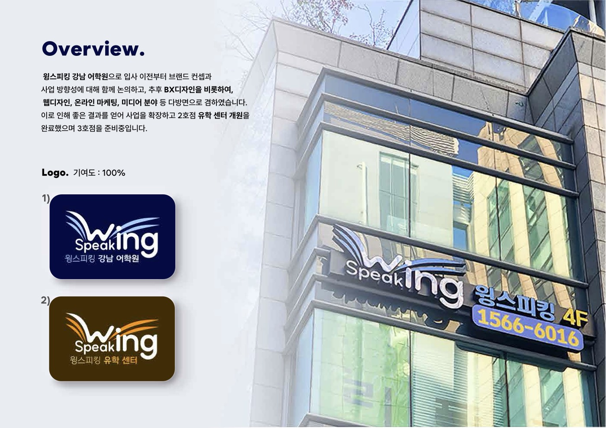
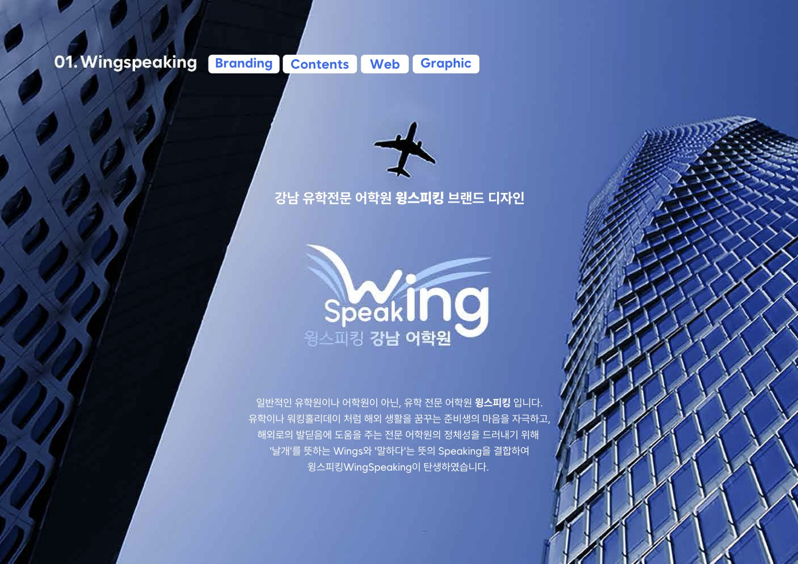
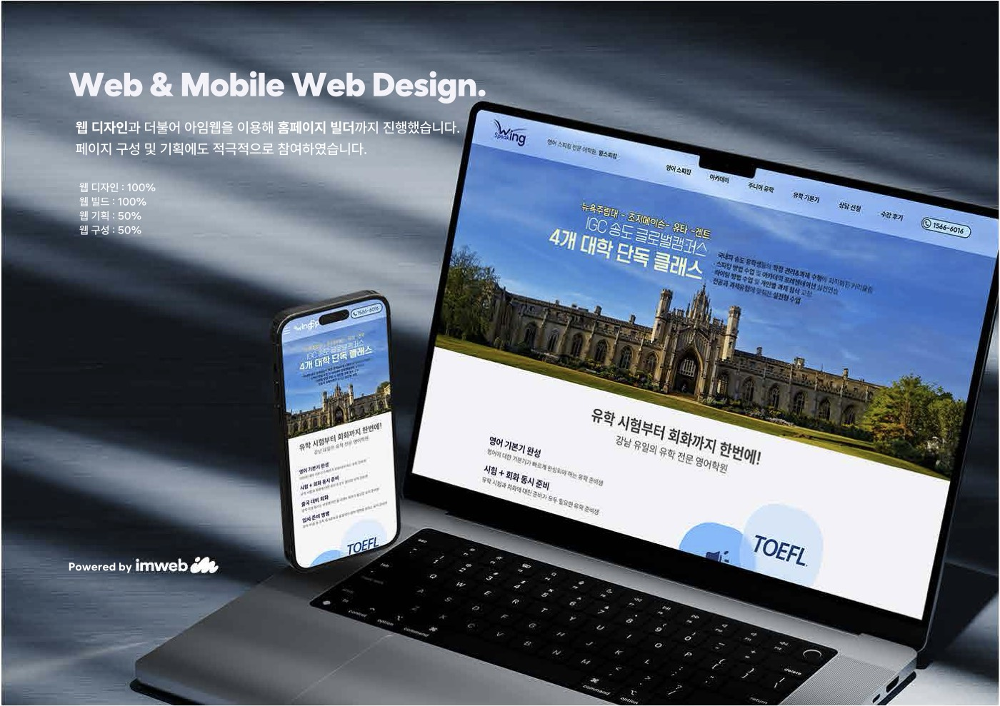
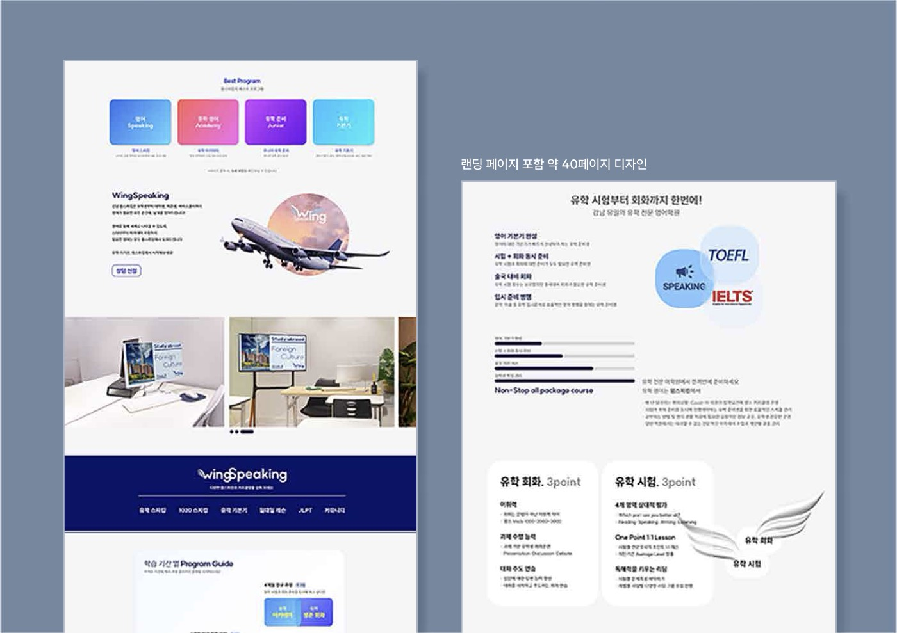
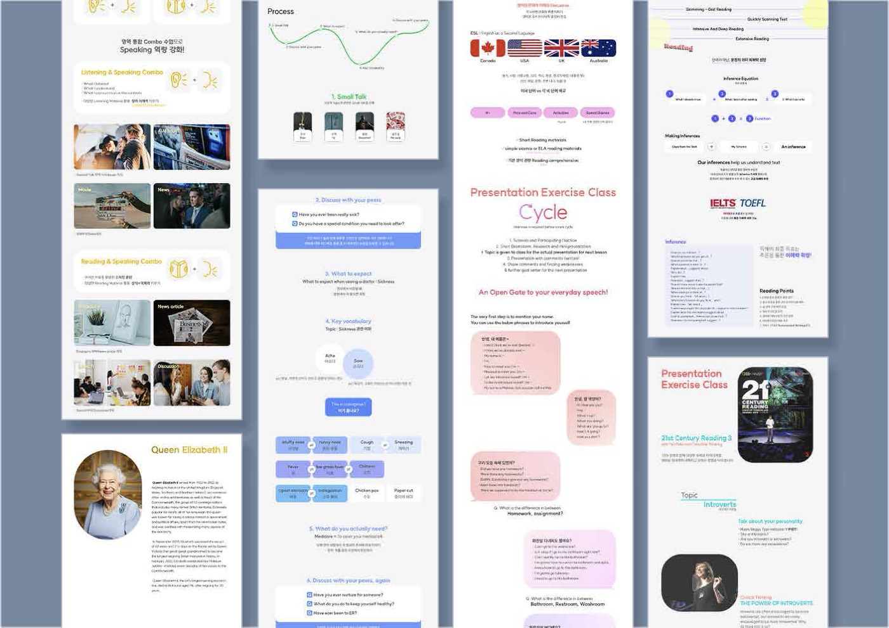
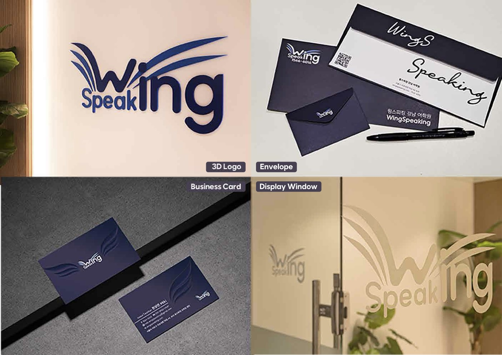
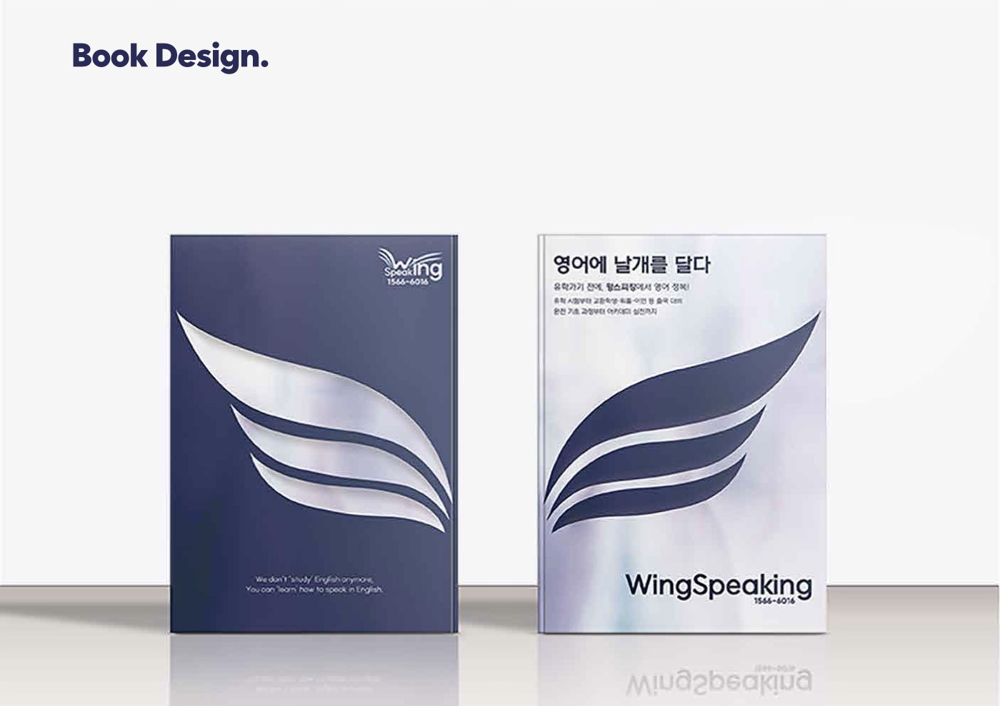
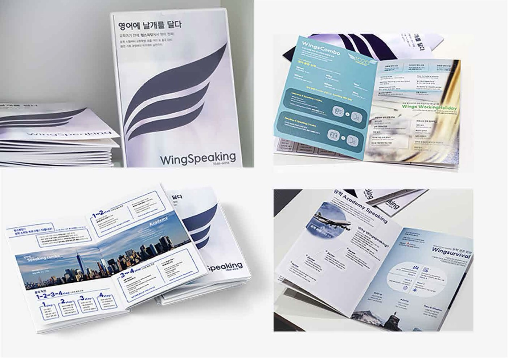
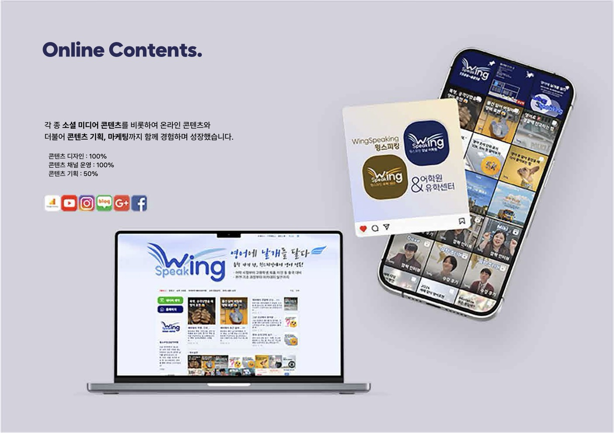
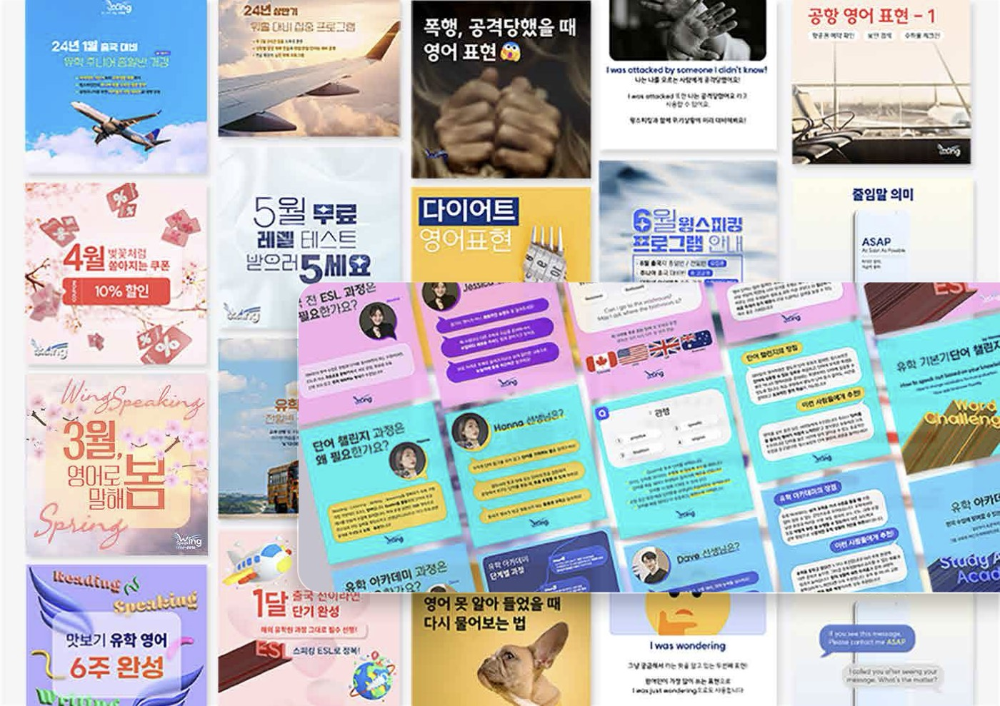

T-01
Logo
날개와 말하기를 하나의 워드마크로 엮은 로고.
CHART 02 — MAIN
강남 유학 전문 어학원 윙스피킹의 브랜드 디자인. 브랜드 컨셉부터 BX, 웹, 콘텐츠, 마케팅까지 맡았습니다.

일반적인 유학원이나 어학원이 아닌, 유학 전문 어학원이라는 정체성을 드러내는 것이 출발점이었습니다. 유학이나 워킹홀리데이처럼 해외 생활을 꿈꾸는 준비생의 마음을 자극하고, 해외로의 발디딤을 돕는 곳이라는 점을 이름과 형태에 담았습니다.
‘날개’를 뜻하는 Wings와 ‘말하다’는 뜻의 Speaking을 결합해 윙스피킹(WingSpeaking)이 탄생했습니다.
입사 이전부터 브랜드 컨셉과 사업 방향성을 함께 논의했고, 이후 BX 디자인을 비롯해 웹 디자인, 온라인 마케팅, 미디어 분야까지 다방면으로 겸했습니다.

T-01
날개와 말하기를 하나의 워드마크로 엮은 로고.



T-02
웹 디자인과 함께 아임웹으로 홈페이지 빌드까지 진행했습니다. 랜딩 페이지를 포함해 약 40페이지를 디자인했고, 페이지 구성과 기획에도 참여했습니다.



T-03
봉투, 디스플레이 윈도, 교재(Book Design)까지 오프라인 접점을 같은 체계로 맞췄습니다.


T-04
소셜 미디어를 비롯한 온라인 콘텐츠를 만들고, 콘텐츠 기획과 마케팅까지 함께 맡았습니다.
유학 센터 개원 완료
준비 중
랜딩 페이지 포함 디자인·빌드